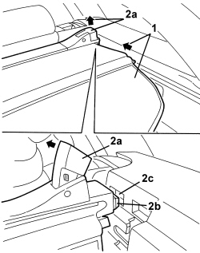
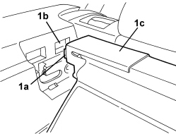

7040B26 LOAD PLATFORM COVER BLIND - R+R
- Path
- Procedures > 70 FITTINGS > 7040 BODY INTERIOR FITTINGS AND TRIM > 7040B LUGGAGE COMPARTMENT AND LOAD PLATFORM TRIMS > 7040B26 LOAD PLATFORM COVER BLIND - R+R
- Kind
- repair procedure (removal / refitting; the operation number is the code)
- Applies to
- all engines; all production periods; only with equipment: Station Wagon
- Interactive page
- https://sloeber94.github.io/elrnDB/alfa/159/en/#/939005453
Applies to: all engines; all production periods; only with equipment: Station Wagon
 Removing
Removing
 Refitting
Refitting- Open the tailgate.
1. Release the load carrying compartment blind and rewind it.
2. Working on the right side of the blind, raise the lever (2a) and release the retainer (2b) from the housing (2c).

Applies to: all engines; all production periods; only with equipment: Station Wagon
1. Working on the left side of the blind, release the retainer (1a) from the housing (1b) and keep the load carrying compartment blind (1c).

Applies to: all engines; all production periods; only with equipment: Station Wagon
Refitting
Removing- Check that the covering blind for the load carrying compartment is not damaged.
- Working on the left side of the blind, attach the retainer in place.
- Working on the right side of the blind, raise the lever then release it attaching the retainer in position.
- If necessary, extract the blind and attach it.
- Close the tailgate.